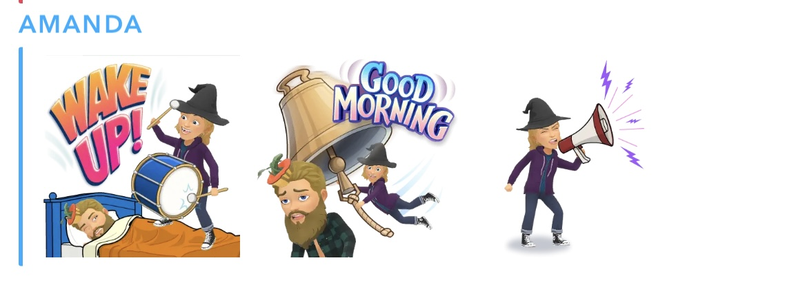

Headset / Microphone
My Corsair gaming headset broke, and I need a new one.
The obvious choice would be to get a new, similar gaming headset (option A), but I'm also considering an audio-focused headset and desktop microphone (option B). I don't have a specific model in mind for either option, but have linked some examples.
Example Option A (headset): Corsair Virtuoso RGB Wireless Headset
Price: $129.99
Example Option B (mic): Snowball ICE USB Microphone
Price: $49.99
Example Option B (headphones): AudioTechnica ATH-M20xBT
Price: $79.99
Nate Silver's On the Edge: The Art of Risking Everything
"From the New York Times bestselling author of The Signal and the Noise, the definitive guide to our era of risk-and the players raising the stakes In the bestselling The Signal and the Noise, Nate Silver showed how forecasting would define the age of Big Data. Now, in this timely and riveting new book, Silver investigates "The River," or those whose mastery of risk allows them to shape-and dominate-so much of modern life. These professional risk takers-poker players and hedge fund managers, crypto true-believers and blue-chip art collectors-can teach us much about navigating the uncertainty of the 21st century.
Amazon: On the Edge: The Art of Risking Everything
Price: $21.99
Of course, local bookstores always preferred!
Ski pants/bibs
Challenge round! I have an Outdoor Research Carbide ski jacket in color "Elk/Naval Blue". O.R., at one point, manufacturered snow pants and bibs in Naval Blue, but they don't any more. I would love matching pants or bibs! Here is my jacket - the pants/bibs should match the lower, "Naval Blue" portion:

Here is what a matching set (different color) looks like:
According to O.R.'s size chart, I need a size Medium Tall or Large Tall.
Timberland Boots
Choose some cool ones! Ideal characteristics include waterproof and durable. To be used as a practical winter boot, that also looks professional.

Size US Men's 11
Smartwool Base Layer
I love my Smartwool and I want another!
Size Men's Medium
3D Printer
Bambu Lab A1 mini, without AMS lite, and a few spools of filament.
Amazon: Bambu Lab A1 min 3D Printer
Price: $199.99
Overcoat
I need a cool coat to wear over formal wear (over a blazer). Ideally, made of a durable fabric that can last for many years. Here is an unrelated picture of Edward from Twilight.
Mips Ski Helmet
Mips is a technology that makes ski helmets significantly safer (Angular Impact Mitigation system for bicycle helmets to reduce head acceleration and risk of traumatic brain injury). I'm concerned that dad's old helmet might not fully protect my noggin if I took a big spill. It's also very important that a helmet should fit my head perfectly, so this isn't something that I can choose online.
Example helmet: Smith Method Mips Snow Helmet
Price: Tends between $100 - $150
Popcorn Bowl
Klein Tools zipper bags
I want at least three to organize my backpack (one for a dopp kit, one for a wire organization bag). Fun colors appreciated. Not sure about the cheapest place to buy them, probably not Amazon.
Price: $39.97
New little sister
Amanda is really annoying (see below picture of example 6:00 a.m. text).
Dispose of her as you see fit. Thank you!
Schweizer Soldatebmesser 08
The "actual" Swiss army knife, used by the "actual" Swiss army.
Victorinox: Swiss Soldier's Knife 08
Price: $70.00
Bittle Robot Dog
The Robot Dog is controlled using the OpenCat framework. It can also hold extra modules in it's mouth (like a camera).
Link: Petoi Bittle Robot Dog
Price: $289.00
2020 Ford Transit Connect XLT Extended Wheelbase
Low mileage, unmodified, cargo back (not seats).
Price: $13,000
Errata
Another cheap monitor